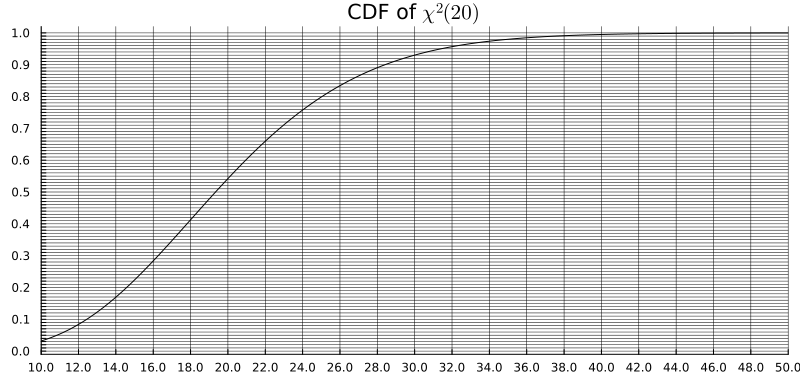

TD1 : Introduction aux modèles statistiques
Distributions à connaître (réflexes)
| Distribution | Support | Moyenne | Variance | Densité / PMF |
|---|---|---|---|---|
| \(\mathcal{N}(\mu, \sigma^2)\) | \(\mathbb{R}\) | \(\mu\) | \(\sigma^2\) | \(\dfrac{1}{\sigma\sqrt{2\pi}}e^{-\frac{(x-\mu)^2}{2\sigma^2}}\) |
| \(\mathrm{Bin}(n, p)\) | \(\{0,\ldots,n\}\) | \(np\) | \(np(1-p)\) | \(\dbinom{n}{k}p^k(1-p)^{n-k}\) |
| \(\mathcal{G}(p)\) | \(\mathbb{N}^*\) | \(1/p\) | \((1-p)/p^2\) | \((1-p)^{k-1}p\) |
| \(\mathcal{E}(\lambda)\) | \(\mathbb{R}_+\) | \(1/\lambda\) | \(1/\lambda^2\) | \(\lambda e^{-\lambda x}\) |
| \(\mathcal{P}(\lambda)\) | \(\mathbb{N}\) | \(\lambda\) | \(\lambda\) | \(e^{-\lambda}\dfrac{\lambda^k}{k!}\) |
| \(\Gamma(k,\lambda)\) | \(\mathbb{R}_+\) | \(k/\lambda\) | \(k/\lambda^2\) | \(\dfrac{\lambda^k x^{k-1} e^{-\lambda x}}{\Gamma(k)}\) |
Ce qu’il faut retenir :
- \(\mathrm{Bin}(n, p)\) : somme de \(n\) variables de Bernoulli\((p)\) indépendantes — compte le nombre de succès.
- \(\mathcal{G}(p)\) : nombre d’essais jusqu’au premier succès (temps d’attente géométrique).
- \(\mathcal{E}(\lambda)\) : durée d’une horloge exponentielle sonnant au taux \(\lambda\) — sans mémoire.
- \(\mathcal{P}(\lambda)\) : nombre de sonneries d’une horloge de Poisson de taux \(\lambda\) sur \([0, 1]\).
- \(\Gamma(k, \lambda)\) : somme de \(k\) variables \(\mathcal{E}(\lambda)\) indépendantes (pour \(k\) entier ; la distribution s’étend à tout \(k > 0\)). Il n’est pas nécessaire d’apprendre sa densité.
Exercice 0 : Intervalles de confiance \(2\sigma\)
Pour chaque distribution \(P\), calculer l’intervalle \(2\sigma\) \([\mu - 2\sigma,\, \mu + 2\sigma]\) et indiquer si \(x_\mathrm{obs}\) se trouve à l’intérieur ou à l’extérieur.
- \(P = \mathcal{N}(2,\; 1{,}5^2)\), \(x_\mathrm{obs} = 5\)
- \(P = \mathcal{N}(-10,\; 50^2)\), \(x_\mathrm{obs} = 90\)
- \(P = \mathcal{P}(12)\), \(x_\mathrm{obs} = 20\)
- \(P = \mathrm{Bin}(100,\; 0{,}4)\), \(x_\mathrm{obs} = 55\)
- \(P = \mathcal{E}(1)\), \(x_\mathrm{obs} = 3\)
- \(P = \mathcal{G}(0{,}25)\), \(x_\mathrm{obs} = 10\)
Exercice 1
On souhaite déterminer si les étudiants de l’ENSAI ont une préférence pour les chats ou les chiens. On suppose qu’a priori, ils n’ont pas de préférence en moyenne. On interroge \(n\) étudiants sur leurs préférences, et on note \(X\) le nombre de réponses « chat ».
Définir \(H_0\) et \(H_1\). S’agit-il d’un test unilatéral ou bilatéral ?
On observe \(n = 10\) étudiants et \(X = 8\) réponses « chat ». Calculer la p-valeur dans ce cas précis. Interpréter le résultat.
Écrire l’expression de la p-valeur en termes de \(n\), \(X\), et \(F\), la fonction de répartition de \(\mathrm{Bin}(n, 0{,}5)\). Rappel : pour une loi discrète, la probabilité de la queue supérieure est \(P(X \geq k) = 1 - F(k-1)\).
Écrire une ligne de code pour calculer la p-valeur en Julia, Python ou R.
Quelle est la p-valeur si \(H_1\) est :
- « Les étudiants préfèrent les chats », ou
- « Les étudiants préfèrent les chiens » ?
Exercice 2
Soient \((X_1, X_2, \ldots, X_n)\) des variables aléatoires i.i.d. suivant la loi \(\mathcal{E}(\lambda)\). On veut tester : \[ H_0: \lambda = \tfrac{1}{2} \quad \text{contre} \quad H_1: \lambda = 1. \]
On rappelle que la densité de \(\Gamma(k, \lambda)\) (forme \(k\), taux \(\lambda\)) est : \[ p(x) = \frac{\lambda^k x^{k-1} e^{-\lambda x}}{(k-1)!}, \quad x > 0, \quad k \in \mathbb{N}^*. \]
Montrer que si \(X \sim \mathcal{E}(\lambda)\) et \(Y \sim \Gamma(k, \lambda)\) sont indépendants, avec \(k \in \mathbb{N}^*\), alors \(X + Y \sim \Gamma(k+1, \lambda)\).
En déduire que \(S_n = \sum_{i=1}^n X_i\) suit une loi Gamma \(\Gamma(n, \lambda)\).
Pour un échantillon de taille \(n = 10\), quelle est la région de rejet de \(S_n\) pour le test du rapport de vraisemblance simple au niveau de signification \(0{,}05\) ?
On admet que \(\Gamma(n, \tfrac{1}{2}) \overset{d}{=} \chi^2(2n)\).
Bonus : Démontrer ce résultat pour \(n = 1\), en utilisant le fait que si \(Z \sim \mathcal{N}(0,1)\) alors \(Z^2 \sim \chi^2(1)\), et un changement de variable approprié.La moyenne empirique est \(\bar{x}_{10} = 2{,}5\). Que peut-on conclure ?
Rappeler ce qu’est une fonction de répartition. La p-valeur est une probabilité de queue \(P_{H_0}(S_{10} \geq s_{\mathrm{obs}})\) ; expliquer comment la lire comme \(1 - F(s_{\mathrm{obs}})\) à partir de la fonction de répartition de la loi \(\chi^2(20)\) représentée ci-dessous.

Comparer la p-valeur obtenue en utilisant une approximation gaussienne de \(\sum X_i\) via le TCL. On rappelle que \(\mathbb{V}(X_1) = \frac{1}{\lambda^2}\).
Exercice 3
Soient \(X_1, X_2, \ldots, X_n\) des variables aléatoires i.i.d. de loi \(\mathcal{N}(\theta, 1)\). Pour tester \(H_0: \theta = 5\) contre \(H_1: \theta > 5\), on considère le test : \[ T = \mathbf{1}\bigl\{\bar{X} > 5 + u\bigr\}, \] où \(\bar{X}\) est la moyenne empirique et \(u > 0\) est à déterminer.
Soit \(g(t) = P(Z \geq t) - e^{-t^2/2}\) pour \(Z \sim \mathcal{N}(0,1)\) et \(t \geq 0\). Calculer \(g'(t)\) et étudier son signe.
En utilisant le comportement de \(g\) en \(+\infty\) et le signe de \(g'\), déduire que \(g(t) \leq 0\) pour tout \(t \geq 0\), c’est-à-dire : \[ P(Z \geq t) \leq e^{-t^2/2}. \] Indication : traiter séparément les intervalles \([0, \frac{1}{\sqrt{2\pi}}]\) et \([\frac{1}{\sqrt{2\pi}}, +\infty)\).
En déduire une valeur de \(u\) telle que l’erreur de première espèce du test \(T\) soit au plus \(\alpha\). Réécrire le test \(T\) en fonction de \(\alpha\) et \(n\).
Fixer \(\alpha = 1/e\) (de sorte que \(u = \sqrt{2/n}\)). Calculer la fonction puissance \(\beta(\theta) = P_\theta(T = 1)\) pour \(\theta > 5\).
Exercice 4
Considérons la famille des distributions de Pareto avec le paramètre connu \(a > 0\) et le paramètre inconnu \(\theta > 0\) : \[ f(x;\theta) = \begin{cases} \dfrac{\theta}{a}\!\left(\dfrac{a}{x}\right)^{\!\theta+1}, & x \geq a, \\[6pt] 0, & x < a. \end{cases} \]
Calculer la moyenne et la variance de \(X \sim \mathrm{Pareto}(a, \theta)\). On peut supposer \(\theta > 2\) pour que la variance soit finie.
Réécrire la densité sous la forme de la famille exponentielle \(f(x;\theta) = a(x)\,b(\theta)\,\exp\!\bigl(c(\theta)\,d(x)\bigr)\) et identifier \(a\), \(b\), \(c\) et \(d\).
En déduire la forme générale du test uniformément plus puissant \(\mathrm{UMP}_\alpha\) pour \[H_0: \theta \geq \theta_0 \quad \text{contre} \quad H_1: \theta < \theta_0.\] Indiquer soigneusement le sens de la région de rejet pour \(\sum d(X_i)\).
Pour \(a = 1\), construire le test UMP pour l’hypothèse nulle : « la moyenne de la distribution est inférieure ou égale à \(2\) ». Commencer par exprimer cette contrainte en termes de \(\theta\).
Quelle est la loi de \(d(X_1)\) ? (\(d\) est défini à la Q.2.)
En déduire la loi de \(\sum_{i=1}^n d(X_i)\) sous \(H_0\), et identifier un pivot suivant une loi \(\chi^2\).Pour \(a = 1\), \(n = 20\) et \(\alpha = 0{,}05\), écrire une ligne de code en Julia, Python ou R pour calculer le seuil de rejet (c’est-à-dire la valeur critique de \(\sum_{i=1}^n \log X_i\)).